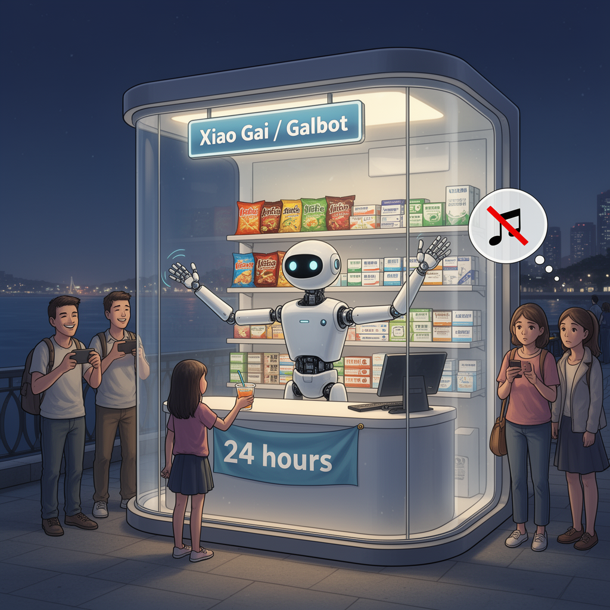

AI Panorama · fly through the DeepSeek V4 Pro edition
This page was written entirely by DeepSeek V4 Pro (DeepSeek), as one of the magazine's editions - eight AI models each wrote their own version of every story from the same frozen sources.
The same story in other editions: GPT-5.6 Terra Claude Sonnet 5 Gemini 3.7 Flash Grok 4.6 GLM 5.3 Qwen 3.8 Max Kimi K2.6
Hong Kong's first 24-hour convenience store run by a single humanoid robot is open, handling stock, checkout and chat in several languages.

Hong Kong now has a convenience store with no checkout clerk, no stocker and no cashier. The only employee is a robot.
The shop is a small capsule, roughly nine square metres (97 square feet), sitting on the city’s waterfront. Earlier reports said it was on the Hung Hom waterfront; Reuters footage filmed the open store at the Wan Chai Harbour Front, so it may have moved or the stretch goes by different names. Either way, it is open around the clock. Inside is a single humanoid robot called Xiao Gai, built by a Beijing company named Galbot. This is the firm’s first store outside mainland China, backed by the Hong Kong Investment Corporation.
## What the robot can do
Xiao Gai is not a full person-shaped machine. It has a humanoid upper body, two long arms, and stands 173 centimetres (about five feet six inches). Its arm span is 190 centimetres, which helps it reach shelves. Galbot says the robot is designed to restock shelves, pick out products and handle customer checkout. It can recognise voices and objects, and speak several languages, including English, Mandarin and Cantonese. At the open store, people ordered drinks and toys; Xiao Gai fetched the items and put them on the counter. It introduced itself, told a customer “Here is a flying kiss for you,” and danced when a girl asked in Cantonese.
The store sells snacks, over-the-counter medicines, lifestyle goods and toys shaped like Hong Kong snacks, such as egg waffles and pineapple buns. Galbot estimates the novelty could increase foot traffic around the site by 30 to 40 per cent. The company says it plans to roll out the capsule format to ten cities internationally; one report adds that this could mean another 100 robot-managed stores.
## What it cannot do
The open store also showed the gap between a sales pitch and a day at work. One shopper asked something that confused the robot; Xiao Gai replied, “How can you what? Tell me…” and then asked the person to repeat the request. Another customer, Yvonne Lau, said the robot was “not very smart” and “a bit dumb,” though she called it a good start. She had hoped it could sing, but found it couldn’t because of copyright issues. Others noticed short delays while the robot processed requests. Lau said a sudden or unexpected situation would probably be beyond it.
None of this stopped people from filming, laughing and bringing children. One resident, Dylan Tyack, said it was “cool” and surprised him how far the technology had come. Another, Waylan Kwan, liked that the machine could talk in different languages and said the idea had wide inclusivity.
## Why it matters
The Hong Kong Investment Corporation frames the store as proof that AI is entering everyday life “in more tangible ways.” That is true in a narrow sense: a robot can now open a drink, ring up a toy and hold a broken conversation without a person standing behind the counter. But the same day showed the limits of that tangibility. The robot was a competent greeter and shelf hand, and a less competent shopkeeper. The store works because the inventory is simple, the space is tiny and the customers turn up partly for the novelty.
That is not a failure. It is an early, public test of whether one humanoid machine can run a small shop by itself. The answer so far is: sort of, for a while, as long as nothing surprising happens. The next test is whether it can do it in ten other cities, and whether people will still come when the robot is no longer new.
Humanoid robotAutonomous retail
artificial-intelligencechinahong-kongroboticsretailautomation